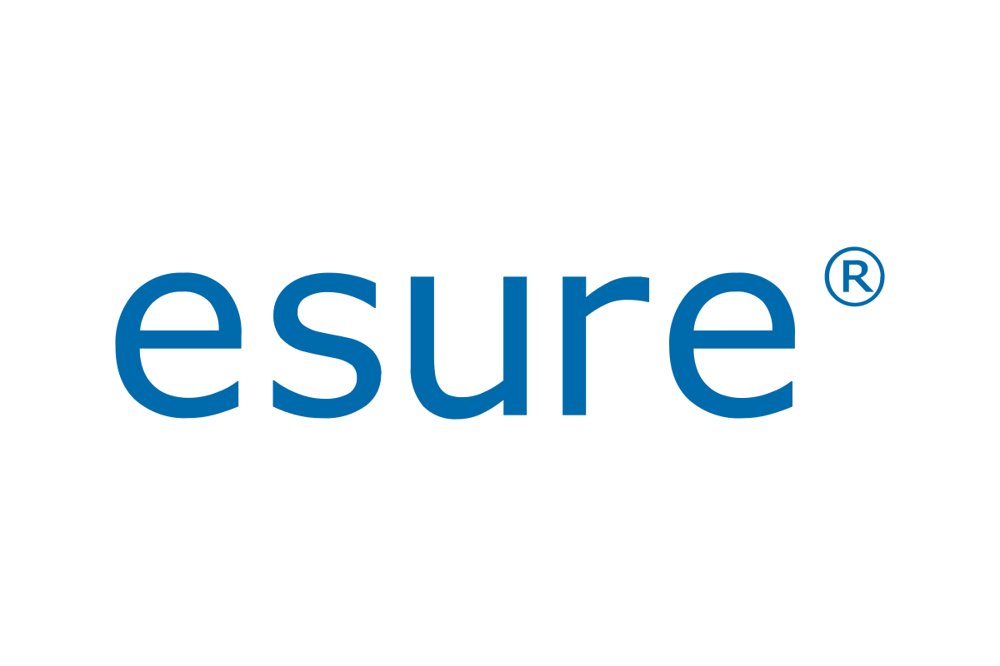
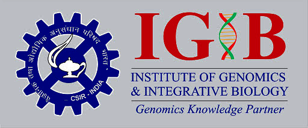
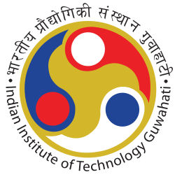
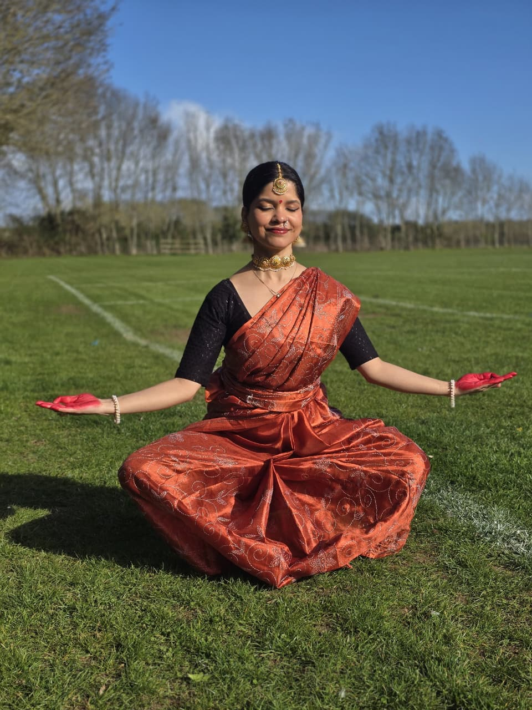
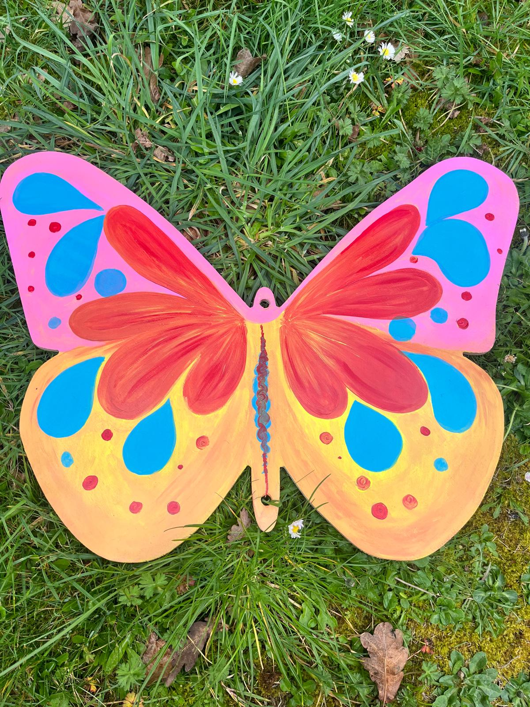
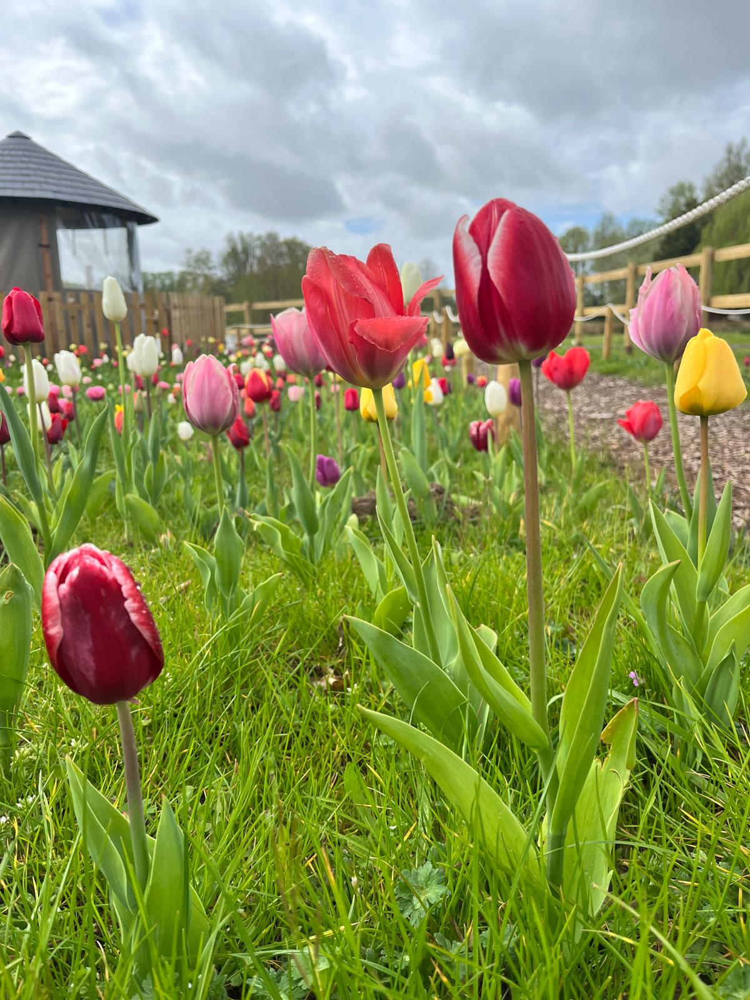

Automation & UI Testing
Playwright, Selenium WebDriver, WebdriverIO, Web Test Runner, QUnit, regression design, and browser validation for real product journeys.
QA AUTOMATION ENGINEER · SDET · RESEARCH BACKGROUND
I’m Neha Tiwari, a QA Automation Engineer and SDET with 5+ years of experience across web, API, integration, and data-intensive platforms. I build maintainable automation, strengthen release confidence, and help teams turn quality into a dependable engineering practice.
ABOUT ME
I work across browser automation, API validation, integration testing, and release readiness. My focus is helping teams ship with more confidence by building practical coverage, improving testability, and reducing noise in the release process.
My background in computational biology strengthened the way I approach systems: evidence first, domain awareness, and careful analysis of why failures happen. That mindset continues to shape how I design tests, investigate issues, and support engineering teams.
SKILLS
Playwright, Selenium WebDriver, WebdriverIO, Web Test Runner, QUnit, regression design, and browser validation for real product journeys.
Postman, REST Assured, Swagger/OpenAPI, Kafka validation, PostgreSQL checks, and structured backend verification across integration-heavy systems.
Test strategy, shift-left QA, exploratory testing, release readiness, defect triage, CI/CD integration, and clear risk communication.
EXPERIENCE


EARLIER RESEARCH & INTERNSHIP EXPERIENCE
Gained early industry exposure in a pharmaceutical setting, building structured habits around documentation, process awareness, and disciplined technical work.

Worked in a genomics and integrative biology research environment, strengthening my foundation in biological data, analytical thinking, and methodical problem solving.

Built academic research experience through structured technical exploration, experimentation, and exposure to rigorous engineering methods.
FEATURED
Published in Frontiers in Microbiology, reflecting work at the intersection of computational biology, clinical context, and structured data analysis.
View paperPublished in PLOS ONE, focused on modelling outcomes using structured clinical datasets and reproducible analytical methods.
View paperPROJECTS
Contributed to test strategy and automation coverage for distributed product workflows, aligning browser automation with maintainable quality practices.
Built and maintained regression coverage for business-critical insurance workflows, improving confidence across high-impact customer journeys.
Supported quality for scientific software systems where domain correctness, data integrity, and trustworthy outputs were essential.
Applied structured data analysis and modelling in academic research focused on COVID-19 outcomes and respiratory co-infections.
EDUCATION & RESEARCH
Indraprastha Institute of Information Technology Delhi (IIIT-D)
Strengthened my analytical and structured problem-solving approach through data-intensive research, modelling, and publication work.
Uttarakhand Technical University
Built a broad engineering foundation that still informs how I think about systems, logic, and technical quality.
Respiratory co-infections as modulators of SARS-CoV-2 clinical phenotype.
View publicationCOVID-19 risk stratification and mortality prediction in hospitalized patients.
View publicationRECOMMENDATIONS
QE Tech Lead at MathWorks
“I had the pleasure of working with Neha shortly after she joined our QE team, and I was immediately impressed by her technical expertise and adaptability. Neha quickly familiarized herself with our projects and technologies, making impactful contributions from the outset.”
“Neha's deep understanding of tools like Docker, JavaScript testing frameworks, and cloud environments has been a tremendous asset to our team. She not only brought a high level of technical proficiency but also applied these skills to develop and maintain high-quality, efficient test procedures and automated tests. Her commitment to code quality is evident in every task she undertakes, ensuring that our projects meet the highest standards. One of Neha's key strengths is her ability to effectively communicate within the team. She consistently keeps everyone updated on her progress and is quick to identify and address blockers or issues, facilitating smoother project workflows. Her proactive approach to problem-solving, especially in catching up on feature testing for the features, has had a significant positive impact on our team's output.”
“Neha's combination of technical skills, quality-focused mindset, and strong team communication makes her a standout professional. I highly recommend her for any future opportunities, and I am confident she will continue to excel in her career.”
CONTACT
Open to QA Automation and SDET opportunities, software quality conversations, and thoughtful engineering collaboration.
OUTSIDE WORK

Dance keeps me connected to discipline, rhythm, expression, and long-form practice.

I enjoy working with colour, composition, and visual balance in a way that feels playful and thoughtful.

I love nurturing plants and spending time with slow, living things that bring calm and perspective.
I’m energised by learning, whether that means exploring a new tool, a new idea, or a new creative practice.